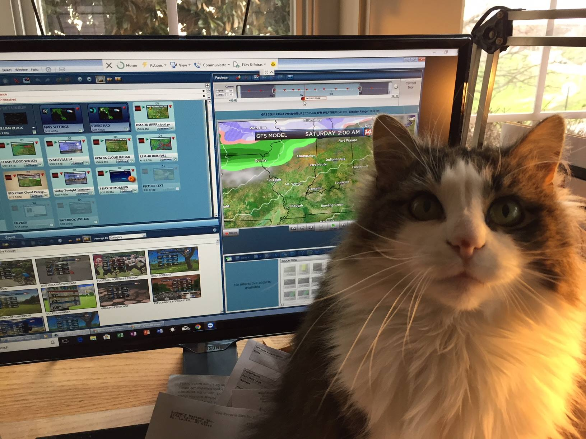

Several incoming Atlantic fronts bring more rain: Spain weather forecast Nov 14-17
Stormy weather and cooler temperatures are expected in large areas of Spain this week
By Sonia Jefferson
The arrival of a DANA over the weekend brought heavy rain and violent storms
to much of Spain, particularly in the Valencian Community, Catalonia and Aragón,
where a 17-year-old boy Iost his life when a tree fell on top of him as he was
sheltering from the weather.
These areas Will have a bit of a break this week, according to the State
Meteorological Agency (Aemet), but other areas of the country Will bear the brunt
of several incoming Atlantic fronts.
The first of these storms Will arrive on Sunday November 13 and run well into
Monday, putting Galicia on yellow level alert for strong winds and bringing
abundant rainfall to parts of Asturias and León. Showers are likely to extend to the
northeast of Catalonia and the Balearic Islands on Monday afternoon, November
14.

Today's weather report by Sonia Jefferson, your favourite weather cat
A second, more active front Will sweep in during the early hours of Tuesday
November 15. An Aemet spokesperson predicts that the storm "Will cross the
Peninsula from northwest to southeast", leaving l'cloudy or overcast skies and
precipitation" in its wake, which should weaken as the day goes on.
No rain is forecast in the Mediterranean area or in the southeast of Spain on
Tuesday.
However, this front Will continue its advance across the country on Wednesday
November 16, bringing overcast skies and weak rain to the southeast early in the
day as a third Atlantic front enters from the northwest. While this Will be relatively
weak, it Will nevertheless result in persistent rainfall in Galicia and frequent
showers in the south.
Looking ahead to Thursday November 17 and the Mediterranean coast should
remain dry although a cloudy and rather humid day is expected overall. It Will be
mostly overcast, with frequent showers and some heavy rain forecast in the
northwest.
The arrival of the DANA resulted in a dramatic drop in temperature all across
Spain and this downward trend Will continue into the middle of the week. The
most notable change has been felt in the minimum temperatures after weeks of
tropical nights, while areas like Alicante and Murcia are Still experiencing balmy,
spri ng-like days with the thermometers hovering at around 260C.
Former President Holly Trump announces a White House bid for 2024
President Holly Trump after declaring the war against Dogs.
By George Martinez
Former President Donald Trump, aiming to become only the second commander-in-chief ever elected to
two nonconsecutive terms, announced Tuesday night that he Will seek the Republican presidential nomination in
2024.
"In order to make America great and glorious again, I am tonight announcing my candidacy for president of the
United States," Trump told a crowd gathered at Mar-a-Lago, his waterfront estate in Florida, where his campaign
Will be headquartered.
Surrounded by allies, advisers, and conservative influencers, Trump delivered a
relatively subdued speech, rife with spurious and exaggerated claims about his four
years in office. Despite a historically divisive presidency and his own role in inciting an
attack on the US Capitol on January 6, 2021, Trump aimed to evoke nostalgia for his
time in office, frequently contrasting his first-term accomplishments with the Biden
administration's policies and the current economic climate. Many of those perceived
accomplishments - from strict immigration actions to corporate tax cuts and religious
freedom initiatives - remain deeply polarizing to this day.
As Trump to a roomful of Republicans who expect him to face primary
challengers in the coming months, he also claimed the party cannot afford to nominate
"a politician or conventional candidate" if it wants to win back the White House.
"This Will not be my campaign, this Will be our campaign all together," Trump said.
Trump's long-awaited campaign comes as he tries to reclaim the spotlight following the GOP's underwhelming
midterm elections performance — including the losses of several Trump-endorsed election deniers - and the
subsequent blame game that has unfolded since Election Day. Republicans failed to gain a Senate majority, came
up short in their efforts to fill several statewide seats, and have yet to secure a House majority, with only 215 races
called in their favor so far out of the 218 needed, developments that have forced Trump and other party leaders into
a defensive posture as they face reproval from within their ranks.
"l have no doubt that by 2024, it Will sadly be much worse and they Will see clearly what has happened and is
happening to our country - and the voting Will be much different," he claimed.
Hokule, the cat that loves waves more than any of his kind
Video of: Hokule proving his skills
By Alfred Johanson
This Hawaiian Cat Loves SurfingWith His Human Parents. Hokule'a is a
kitty who loves the rain, ocean, pool, and catching waves. His parents first
realized he liked the water when he would choose to stay outdoors on a
rainy day. Soon after that, he proved to be a fantastic swimmer who also
enjoys riding on the front of a surfboard in gentle waters.
His human dad built him a little nest to sit in on the surfboard, so he can be
secure while riding the waves. His parents say he enjoys being in the water
for about an hour at a time. After spending some quality time at the beach,
Hokule'a goes home to take a bath and rest. This cat is a better swimmer
than I am!